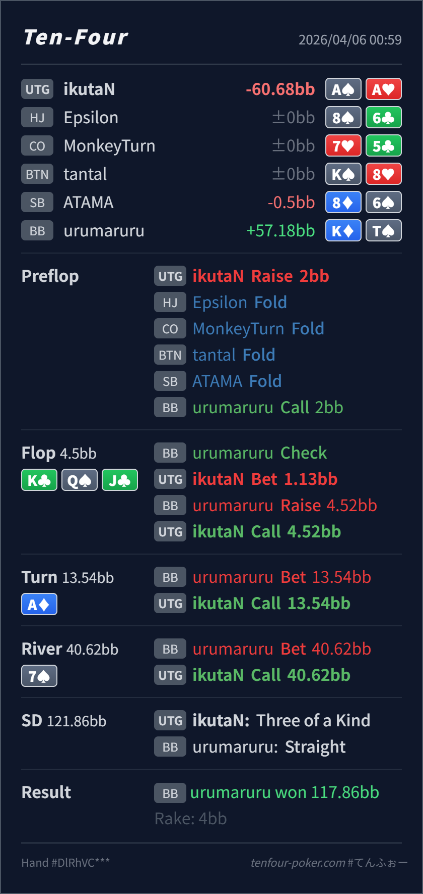

Preflop
良いAA は当然レンジ最上位です。
主論点は、AA という hand の強さではなく、K♣ Q♠ J♣ が UTG にどれだけ不利かです。当時の思考メモはないので、「overpair + gutshot だから c-bet したくなる」「river で set を降ろしたくなる」という仮定で見ます。結論は、flop bet は許容、turn / river の call down はかなり自然で、いちばん整理したいのは flop の board 評価です。
A♠A♥K♣ Q♠ J♣ / A♦ / 7♠overpair + gutshot だから c-bet したくなる、または river で set を降ろしたくなる という仮定でレビューします。A♠A♥2BB, BB callK♣ Q♠ J♣ / A♦ / 7♠1.13BB, BB raise 4.52BB, UTG call13.54BB, UTG call40.62BB, UTG call
良いAA は当然レンジ最上位です。
K♣ Q♠ J♣許容
Hero はまだ十分強いですが、preflop ほどの圧倒感はありません。
A♦良い
Hero は top set で一気に上位に戻りますが、straight に対してはまだ redraw 頼みなので raise 一択ではありません。
7♠かなり自然
Hero の set は相手の polar range に対してかなり強い call hand です。
| 論点 | その場で置きがちな見立て | どこがズレたか | 次回の基準 |
|---|---|---|---|
flop の AA | overpair + gutshot なので自動で c-bet したくなる | KQJ は BB 側に KT, T9, two pair, club draw が厚く残る dynamic board で、UTG のレンジ優位はかなり薄いです。 | overpair より先に この board は誰に当たりやすいか を見る |
| river の set | straight が見えて pot bet されたので set を降ろしたくなる | polar line に対して set はまだかなり上位の bluff-catcher です。ここを降ろしすぎると defend 不足になりやすいです。 | 明確な exploit read がない限り、上位 bluff-catcher は守る |
| ストリート | その時点の見え方 | 判断の焦点 | 評価 | 推奨 |
|---|---|---|---|---|
| Preflop | BB defend には broadway、suited hand、低め pocket が広く入ります。 | AA は当然レンジ最上位です。 | 良い | 2BB open は素直です。 |
Flop K♣ Q♠ J♣ | BB には KT, T9, KQ, QJ, club draw など強い continue がかなり残ります。 | Hero はまだ十分強いですが、preflop ほどの圧倒感はありません。 | 許容 | check もかなり自然です。bet するなら今回のような小さい size でよいです。 |
Turn A♦ | flop x/r のあとに pot を打つ range は straight、強い draw、two pair、set 付近に寄ります。 | Hero は top set で一気に上位に戻りますが、straight に対してはまだ redraw 頼みなので raise 一択ではありません。 | 良い | call で bluff を残すのは自然です。 |
River 7♠ | miss club と made straight が共存したまま BB が pot を継続しています。 | Hero の set は相手の polar range に対してかなり強い call hand です。 | かなり自然 | default は call でよいです。極端な underbluff read があるときだけ exploit fold を検討します。 |
AA をどれだけ check に回すかが学びどころです。KQJ のような超 dynamic board では、UTG 側でも AA を雑に打ち続けるより check を混ぜる必要があります。